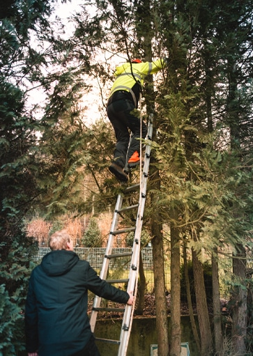
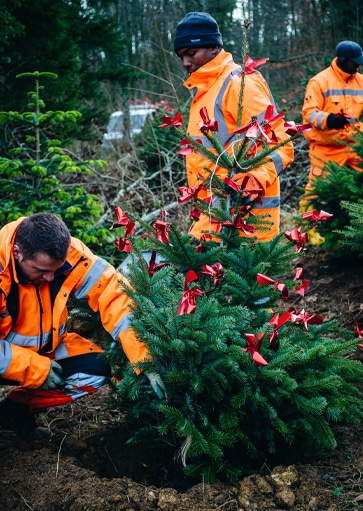
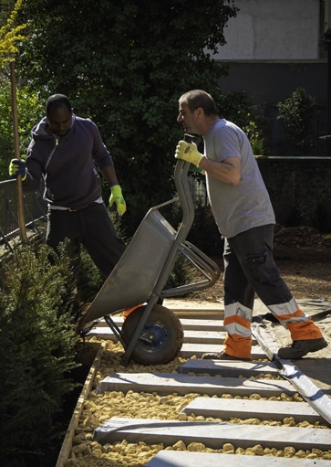
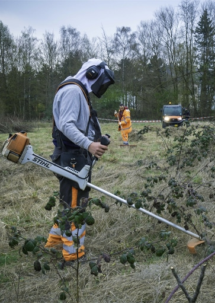

Cette initiative s'inscrit dans le cadre des campagnes "Ouni Pestiziden" et plus généralement des projets d'entretiens extensifs de l'environnement.
Elle contribue de la sorte à améliorer nos conditions sociales, économiques et environnementales
Cette initiative est aussi créatrice d'emploi. En effet, de nombreux espaces publics nécessitent un entretien régulier (nettoyage, désherbage, taille des massifs,) et ceci de façon écologique.
Services offerts :
Tarifs (TVA 17% inclus) :